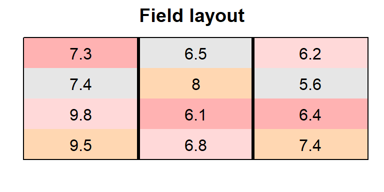
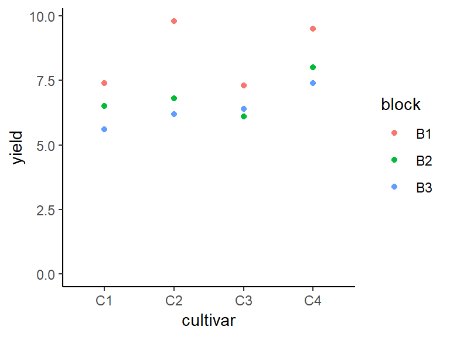
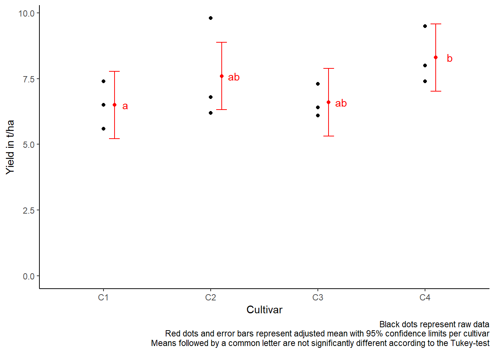

Randomized complete block design
# packages
pacman::p_load(readr, tidyverse, # data import and handling
emmeans, multcomp, # mean comparisons
ggplot2, desplot, # plots
report, equatiomatic) # automated analysis summariesData
This example is taken from Chapter “2 Randomized complete block design” of the course material “Mixed models for metric data (3402-451)” by Prof. Dr. Hans-Peter Piepho. It considers data published in Clewer and Scarisbrick (2001) from a yield (t/ha) trial laid out as a randomized complete block design (3 blocks) with cultivar (4 cultivars) being the only treatment factor. Thus, we have a total of 12 plots.
Import
# data (import via URL)
dataURL <- "https://raw.githubusercontent.com/SchmidtPaul/DSFAIR/master/data/Clewer%26Scarisbrick2001.csv"
dat <- read_csv(dataURL)
dat## # A tibble: 12 x 5
## block cultivar yield row col
## <chr> <chr> <dbl> <dbl> <dbl>
## 1 B1 C1 7.4 2 1
## 2 B1 C2 9.8 3 1
## 3 B1 C3 7.3 1 1
## 4 B1 C4 9.5 4 1
## 5 B2 C1 6.5 1 2
## 6 B2 C2 6.8 4 2
## 7 B2 C3 6.1 3 2
## 8 B2 C4 8 2 2
## 9 B3 C1 5.6 2 3
## 10 B3 C2 6.2 1 3
## 11 B3 C3 6.4 3 3
## 12 B3 C4 7.4 4 3Formatting
Before anything, the columns block and cultivar should be encoded as factors, since R by default encoded them as character.
Exploring
In order to obtain a field layout of the trial, we can use the desplot() function. Notice that for this we need two data columns that identify the row and column of each plot in the trial.
desplot(data = dat,
form = cultivar ~ col + row, # fill color per cultivar
out1 = block, # bold lines between blocks
text = yield, cex = 1, shorten = F, # show yield for each plot
main = "Field layout", show.key = F) # formatting
While not necessary for the analysis below, it may be convenient to look at the data as a two-way table with ordered blocks and treatments. In this case we would convert our data, which is in the long format into the wide format as follows:
dat %>%
dplyr::select(block, cultivar, yield) %>%
pivot_wider(names_from = cultivar, values_from = yield)## # A tibble: 3 x 5
## block C1 C2 C3 C4
## <fct> <dbl> <dbl> <dbl> <dbl>
## 1 B1 7.4 9.8 7.3 9.5
## 2 B2 6.5 6.8 6.1 8
## 3 B3 5.6 6.2 6.4 7.4We could also have a look at the arithmetic means and standard deviations for yield per cultivar or block.
## # A tibble: 4 x 3
## cultivar mean std.dev
## <fct> <dbl> <dbl>
## 1 C1 6.5 0.9
## 2 C2 7.6 1.93
## 3 C3 6.6 0.624
## 4 C4 8.3 1.08## # A tibble: 3 x 3
## block mean std.dev
## <fct> <dbl> <dbl>
## 1 B1 8.5 1.33
## 2 B2 6.85 0.819
## 3 B3 6.4 0.748We can also create a plot to get a better feeling for the data.
ggplot(data = dat,
aes(y = yield, x = cultivar, color = block)) +
geom_point() + # scatter plot
ylim(0, NA) + # force y-axis to start at 0
theme_classic() # clearer plot format 
Modelling
Finally, we can decide to fit a linear model with yield as the response variable and (fixed) cultivar and block effects.
ANOVA
Thus, we can conduct an ANOVA for this model. As can be seen, the F-test of the ANOVA finds the cultivar effects to be statistically significant (p = 0.037 < 0.05).
## Analysis of Variance Table
##
## Response: yield
## Df Sum Sq Mean Sq F value Pr(>F)
## cultivar 3 6.63 2.21 5.525 0.036730 *
## block 2 9.78 4.89 12.225 0.007651 **
## Residuals 6 2.40 0.40
## ---
## Signif. codes: 0 '***' 0.001 '**' 0.01 '*' 0.05 '.' 0.1 ' ' 1Mean comparisons
Following a significant F-test, one will want to compare genotype means.
mean_comparisons <- mod %>%
emmeans(pairwise ~ "cultivar", adjust="tukey") %>% # adjust="none" for t-test
pluck("emmeans") %>%
cld(details=TRUE, Letters=letters) # add letter display
mean_comparisons$emmeans # adjusted cultivar means## cultivar emmean SE df lower.CL upper.CL .group
## C1 6.5 0.365 6 5.22 7.78 a
## C3 6.6 0.365 6 5.32 7.88 ab
## C2 7.6 0.365 6 6.32 8.88 ab
## C4 8.3 0.365 6 7.02 9.58 b
##
## Results are averaged over the levels of: block
## Confidence level used: 0.95
## Conf-level adjustment: sidak method for 4 estimates
## P value adjustment: tukey method for comparing a family of 4 estimates
## significance level used: alpha = 0.05## contrast estimate SE df t.ratio p.value
## C3 - C1 0.1 0.516 6 0.194 0.9971
## C2 - C1 1.1 0.516 6 2.130 0.2447
## C2 - C3 1.0 0.516 6 1.936 0.3066
## C4 - C1 1.8 0.516 6 3.486 0.0486
## C4 - C3 1.7 0.516 6 3.292 0.0609
## C4 - C2 0.7 0.516 6 1.356 0.5656
##
## Results are averaged over the levels of: block
## P value adjustment: tukey method for comparing a family of 4 estimatesPresent results
Mean comparisons
For this example we can create a plot that displays both the raw data and the results, i.e. the comparisons of the adjusted means that are based on the linear model.
ggplot() +
# black dots representing the raw data
geom_point(
data = dat,
aes(y = yield, x = cultivar)
) +
# red dots representing the adjusted means
geom_point(
data = mean_comparisons$emmeans,
aes(y = emmean, x = cultivar),
color = "red",
position = position_nudge(x = 0.1)
) +
# red error bars representing the confidence limits of the adjusted means
geom_errorbar(
data = mean_comparisons$emmeans,
aes(ymin = lower.CL, ymax = upper.CL, x = cultivar),
color = "red",
width = 0.1,
position = position_nudge(x = 0.1)
) +
# red letters
geom_text(
data = mean_comparisons$emmeans,
aes(y = emmean, x = cultivar, label = .group),
color = "red",
position = position_nudge(x = 0.2)
) +
ylim(0, NA) + # force y-axis to start at 0
ylab("Yield in t/ha") + # label y-axis
xlab("Cultivar") + # label x-axis
labs(caption = "Black dots represent raw data
Red dots and error bars represent adjusted mean with 95% confidence limits per cultivar
Means followed by a common letter are not significantly different according to the Tukey-test") +
theme_classic() # clearer plot format 
dataset
The data contains 12 observations of the following variables: - block: 3 levels: B1, n = 4; B2, n = 4 and B3, n = 4 - cultivar: 4 levels: C1, n = 3; C2, n = 3; C3, n = 3 and C4, n = 3 - yield: Mean = 7.25, SD = 1.31, range = [5.60, 9.80], 0 missing
model
\[ \operatorname{yield} = \alpha + \beta_{1}(\operatorname{cultivar}_{\operatorname{C2}}) + \beta_{2}(\operatorname{cultivar}_{\operatorname{C3}}) + \beta_{3}(\operatorname{cultivar}_{\operatorname{C4}}) + \beta_{4}(\operatorname{block}_{\operatorname{B2}}) + \beta_{5}(\operatorname{block}_{\operatorname{B3}}) + \epsilon \]
We fitted a linear model to predict yield with cultivar and block.The model’s explanatory power is substantial (R2 = 0.87, adj. R2 = 0.77). The model’s intercept is at 7.75. Within this model:
- The effect of cultivarC2 is positive and can be considered as large and not significant (beta = 1.10, std. beta = 0.84, p = 0.077).
- The effect of cultivarC3 is positive and can be considered as tiny and not significant (beta = 0.10, std. beta = 0.08, p = 0.853).
- The effect of cultivarC4 is positive and can be considered as very large and significant (beta = 1.80, std. beta = 1.38, p < .05).
- The effect of blockB2 is negative and can be considered as very large and significant (beta = -1.65, std. beta = -1.26, p < .05).
- The effect of blockB3 is negative and can be considered as very large and significant (beta = -2.10, std. beta = -1.61, p < .01).
anova
The ANOVA suggests that:
- The main effect of cultivar is significant (F(3, 6) = 5.53, p = 0.037) and can be considered as large (partial omega squared = 0.58).
- The main effect of block is significant (F(2, 6) = 12.23, p = 0.008) and can be considered as large (partial omega squared = 0.71).
Exercises
Exercise 1
This example is taken from “Example 5.11” of the course material “Quantitative Methods in Biosciences (3402-420)” by Prof. Dr. Hans-Peter Piepho. It considers data published in Gomez & Gomez (1984). A randomized complete block experiment was conducted to assess the yield (kg/ha) of rice cultivar IR8 at six different seeding densities (kg/ha).
Important: The treatment factor (density) is actually quantitative variable, but for this exercise you should define it as a factor variable with 6 levels anyway. (Notice, however, that in such a case a regression analysis with density being a numeric variable is actually more efficient that ANOVA followed by multiple comparison of means.)
- Explore
- Create a field layout with
desplot() - Draw a plot with yield values per density
- Create a field layout with
- Analyze
- Compute an ANOVA
- Perform multiple (mean) comparisons
# data (import via URL)
dataURL <- "https://raw.githubusercontent.com/SchmidtPaul/DSFAIR/master/data/Gomez%26Gomez1984b.csv"
ex1dat <- read_csv(dataURL)R-Code and exercise solutions
Please click here to find a folder with .R files. Each file contains
- the entire R-code of each example combined, including
- solutions to the respective exercise(s).
Please feel free to contact me about any of this!
schmidtpaul1989@outlook.com